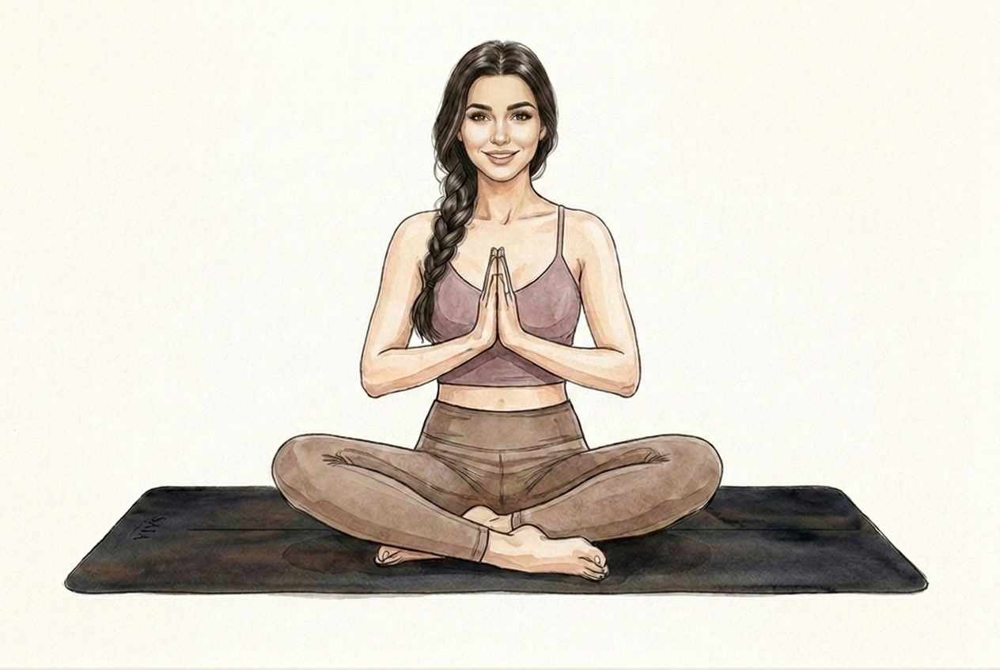
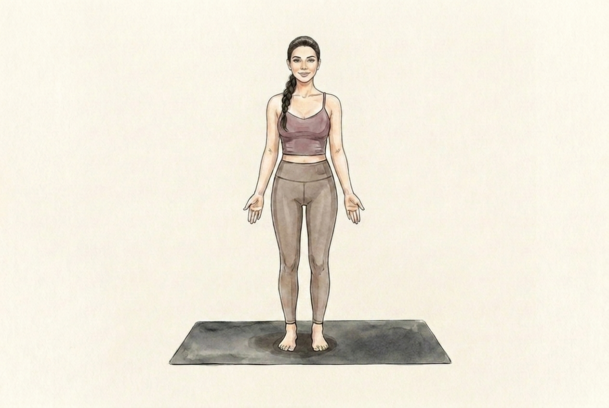
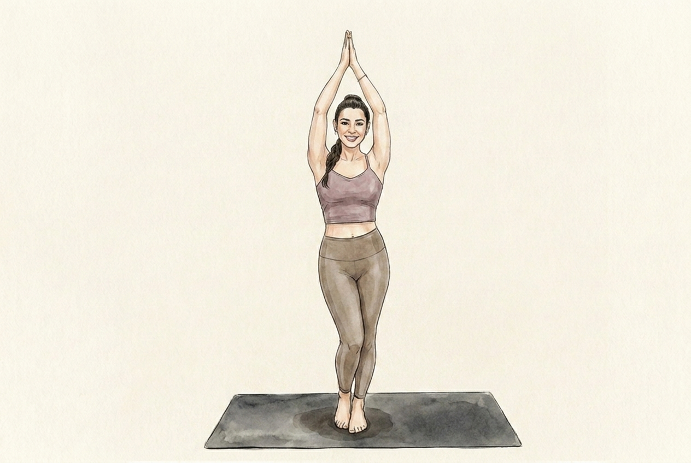
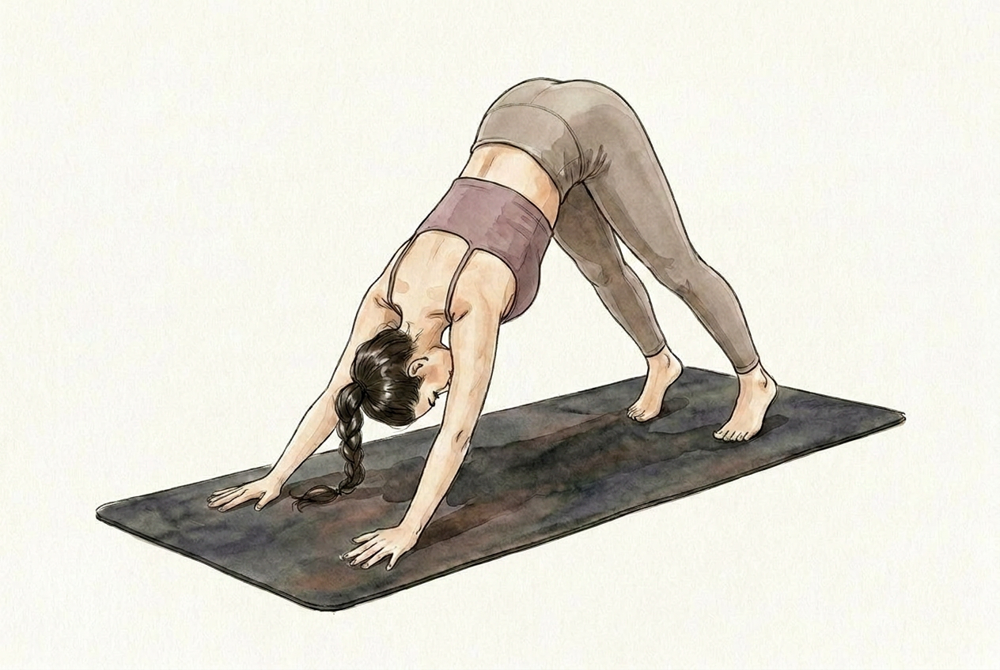
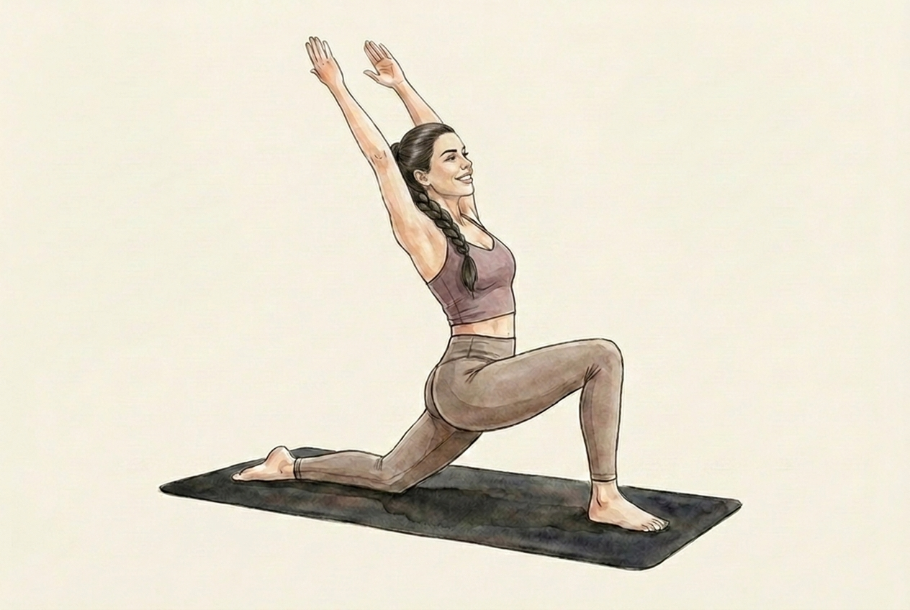
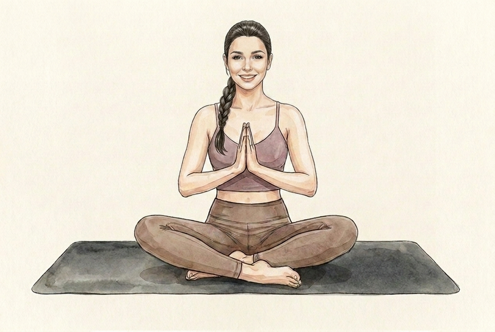

Her real photo → new watercolour face

Earlier generic attempt vs now

The 5 keyframes the whole scroll-flow will be rebuilt from: new mauve cami + taupe outfit, the downward-dog head fixed, and her face now generated from her trained Soul so it actually reads as her. Shown on the cream the live page uses. If these are good, I generate the in-between motion → 303 frames → wire it in.





